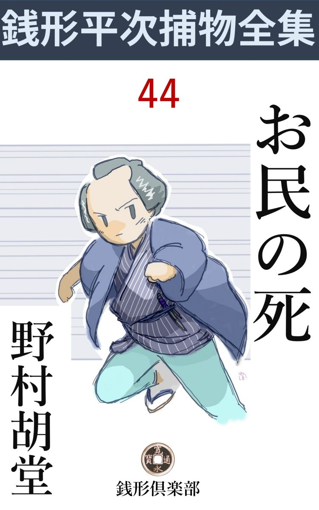
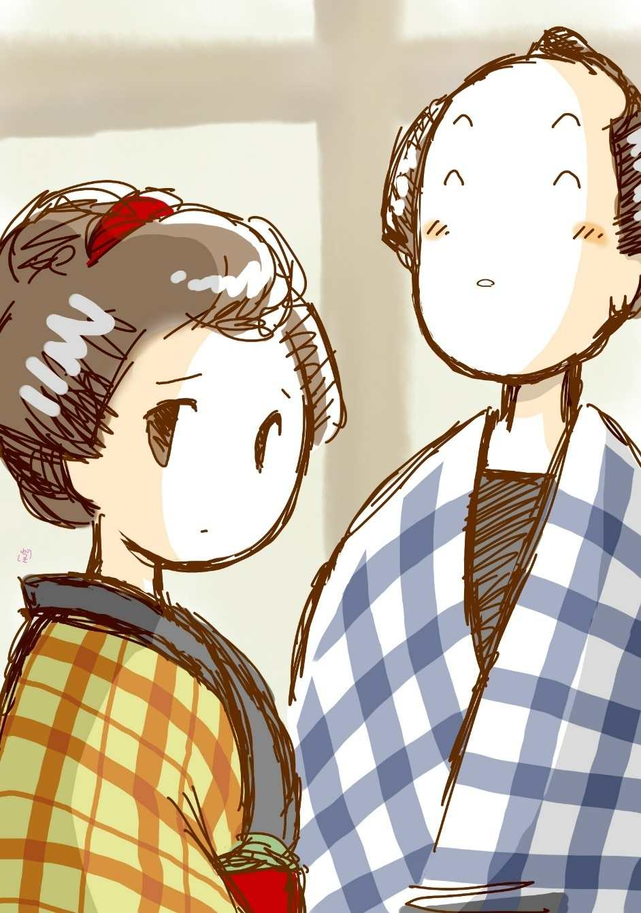
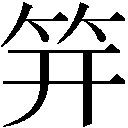

| お民の死: 銭形平次捕物全集第44話 (銭形倶楽部) | |
| 野村胡堂 | |
| ZENIGATA CLUB (2018) | |

一
「親分、世の中はだんだん悪くなって来ますね」
ガラッ八の八五郎は妙なことを言い出しました。鼻毛を抜いて、手の甲に一本ずつ植えて、それを、畳の上でプーッと吹くと言った、太くて粗 い神経の持主の言葉ですから、この------世の中が悪くなった------と言ったところで、たいした真剣味はありません。
「大層考えちゃったね。何が一体悪くなったんだ」
平次は日本一の機嫌でした。手掛けた事件は全部片付いたし、女房のお静は若くて綺麗だし、秋の陽は申分なく晴れたし、一年三百六十五日、こんな好い心持の日は滅多にあるものではありません。
「第一に米が高 え」
ガラッ八は不器用らしく指を折りました。
「可笑しなことを言うぜ。米の高けえのを気にするようになれば、人間も一人前だ------手 前 なんざ、たった一人口で、下の婆さんに炊いて貰っている身体だ。どんなに暴 れ食いをやったって一日一升とは食う道理はねえ」
「仰せの通りだが、湯へ入 っても、髪結床へ行っても、米の高けえ話を聴かされると、俺 のような不自由を知らねえ人間も、ツイ人付き合いに、同じせりふが言ってみたくなるじゃありませんか。------憚 りながら米なんざ、両に一升したって驚く八五郎じゃねえ」
「水ばかり呑んでいる積りなら気が強い------とね」
「交ぜっ返しちゃいけねえ。親分、ところで次の一つは」
「女房の来 手 のねえことじゃあるまいね。この節は女の子の相場も高くなったよ」
「そんな間抜けなものは要らねえ------憚りながら、女房と心張棒には当分用事のねえ世帯だ」
「合の手が多過ぎるよ。その------世の中が悪くなったという、もう一つの証拠は何んだ」
銭形平次も少し真剣でした。
「ろく な御用がねえ事ですよ。ね親分、十手の錆 なんざ、小唄にもならねえ」
「馬鹿野郎。世の中が良くなればこそ、こちとら に仕事がなくなる道理じゃないか。罰の当った言い草だ」
「だがね、親分。世間に悪人が根絶やしになる道理はねえから、銘々、人の目に付かないところで、そっと悪事を働いてるんじゃありませんか」
「大層考え深くなったじゃないか。------だが、そんな事を言った日にゃ、この世の中が恐ろしくて、一日も暢気 な顔をしちゃいられなくなるよ」
平次は事もなげに言いましたが、八五郎の言うことが、長い間の経験で、間違っているとは言いきれません。平次は名御用聞と言われているだけに、この世の中には、どんなに悪事を企らんでいる奴が多いことか、その中のほんの一部が実行され、そして、又その一部分だけが露 顕 することをよく知っていたのです。
丁度そんな話をしている時、この世にも不思議な事件が、向こうから飛込んで来たのでした。
「おや、八、どうやら世直しが飛び込んで来たらしいぜ。朝っぱらから女の声だ。明神様にかこつけて、御用聞の家へ来る客は、きっと面白いネタを持込んで来るよ」
そんな事を言っている平次は、やがてお静の案内した、四十前後の女------三崎町の桶 屋 、久兵衛の女房お夏というのを迎え入れました。
「銭形の親分さん。お上の御用の多いところへ、こんな事を持込んじゃお気の毒ですが、どうぞ聴いてやって下さい------実は」
お夏は不安そうに四方 を見廻しました。縁側に近く八五郎のガラッ八が、まだ鼻毛を気にしているのです。
「あれですかえ。お神さん」
「------」
「御存じの八五郎で、一本立ちの御用聞には違いありませんが、何を聞かしたって大丈夫ですよ」
「親分さん、変なことがあるんですよ。------主人 へ言ったって、取り合ってくれませんから、明神様へお詣りをすると言って、出て来たんですが」
「------」
平次はガラッ八と顔を見合せました。ツイ今しがた話していた、同じ文句が、お夏の口から不用意に飛出したのが可笑しかったのです。
「変なことにもいろいろあるが、どんなことがあったんで、お神さん」
促 し顔の平次。人の話を引出したり、堅い唇をほぐすことにかけては、稼業柄のうまさがあります。
二
桶屋の女房の話は雲をつかむようでした。が、とにかく、恐ろしい呪いが、桶屋一家の上を、黒雲のように覆 うていることは疑いもありません。
「一と月ほど前から、変なことが続きます。最初は、井戸の中へ蛇や蛙の死骸を投り込む者があって弱りましたが、近所の子供の悪 戯 だろうと、腹を立てながらも我慢をしていると、二十日ばかり前、主人が怪我をして来ました。もっとも、ひどい闇の晩で、下水へ突っ転んだとは言っていましたが、後ろから斬られた傷で、転がって出来た傷じゃありません。袷 の肩先が、斜っかけに裂けて、背中へ二三寸浅 傷 を受けたんですもの、勘平さんだって間違いっこありません」
桶屋の女房は真顔で洒落を言っております。
「それから」
平次はその先を促しました。
「隣町の外科に頼んで、塗り薬か何かで誤 魔 化 し、幸い傷は癒りましたが、今度は------」
「------」
お夏はゴクリと固唾 を呑みました。
「一昨日の晩は、もう少しのところで一家焼き殺されるところでしたよ。------夜中過になって、妙にキナ臭いと思って、起きて見ると、庇 の下に積んである、木っ葉や鉋屑 に火がついて燃え上がりかけてるじゃありませんか。飛出そうとすると表もお勝手も、外から薪で心張がして、動きゃアしません。便所の窓から這い出して、稼業柄汲み置きの水をブッ掛けて漸く消しましたが、宵に一と雨来て、鉋屑が湿っていなきゃア、間違いもなく焼殺されるところでしたよ」
「それをどうして放って置いたんだ」
「主人 へお届けするように言いましたが、後が面倒だから------って聴きゃしません」
「------」
「三度目の正直で、今度は寝首でも掻かれるんでしょう。お願いですから、親分さん、主人には内証で、私共一家に祟る人間を捜し、お処刑 をしないまでも、これからそんな事のないように、うん とおどかしてやって下さい」
世帯摺れのした四十女は、遠慮のない調子で、こう言うのでした。
「素人のような事を訊くが------お前さんの家をうんと怨んでいる者は誰だい」
「数え切れないほどありますよ。主人があの通りだし」
お夏は淋しそうでした。桶屋の久兵衛は、神田では人に知られた強 か者で、お上の厄介にはなりませんが、随分諸方をいやがらせて歩くたちの男だったのです。
「そのうちでも一番、睨み合ってるのは」
「千 三 つ屋の佐七ですよ。あの人は、娘のお染を滅茶滅茶にされたって、ひどく怨んでいるそうですが、それは無理ですよ。出羽屋の若旦那が、佐七の娘のお染より、私 のお民坊が好きなら、仕方がないじゃありませんか」
「成程」
三崎町の佐七と言う、野 幇間 のような千三つ屋が、飛んだ良い娘を持っていることや、その娘が、同じ町内の千両分 限 、米屋では神田でも屈指と言われた、出羽屋伝右衛門の伜伝次郎に見染められたとか、捨てられたとかいう話は薄々聞いております。
「ところで、一番親しいのは、------」
「主人と仲が善いと言っちゃ変ですが、何事も相談に乗って下さるのは、出羽屋の旦那ですよ。向うはあの大身代、こっちは店こそ持っていますが、言わば職人で、釣合わない事この上なしですが、妙に主人 とは気が合うものか、やれ来いそれ来いと言っちゃ、三日にあげず呼出されて、時々は世帯の方まで面倒を見て下さいます」
お夏は少し得意そうでした。
「------」
平次は黙って先を促 しました。お夏にとっては、物質的な援助までしてくれる出羽屋の伝右衛門は、神仏の次に有難い人だったのでしょう。
「現に、背中を斬られた時は、分に過ぎた見舞いを下すったし、昨日も主人が相談に行くと、焦 した羽目板を直せと言って、頂いたお金が五両------」
「------」
「もっとも、娘のお民は出羽屋さんでお世話になって、奉公人と言っても、お客分同様、近いうちに、若旦那と娶 合 せて下さるという、内々の話もあります。あの通り、歌舞伎役者のような若旦那ですから、娘は飛んだ仕合せものですよ」
平次はうなずきました。この女の口裏から察すると、余程重大な秘密が、この事件の裏に潜んでいるような気がしたのです。
「お神さん。とにかく、後で私 が行って見よう。久兵衛さんには、何にも言わない方が宜い。お節介をして、お前さんが叱言を言われても気の毒だから」
こう言ってお夏を帰すと、平次は八五郎に何やら囁いて、その後から出してやりました。
三
「親方、小火 か何かあったそうだね。町内で聞込んで来たが」
平次がそう言って、ブラリと神田三崎町の桶屋の店先へ入ったのは、その日の昼過ぎでした。
「おや、銭形の親分さん。好い塩梅に上がって、秋らしい陽気になりました。まアどうぞ」
日頃無愛想な久兵衛が、何を考えたか相好 を崩して、上り框 の鉋屑 を除けて座を作ります。
「まア宜い。店先へ御用聞が立ちはだかっちゃ悪かろうから、小 火 の話さえ聴けばすぐ帰るとしよう」
小火の話を聴かなければ、店先から立退かないとも取れます。平次でも、相手が容易でないと見ると、時々はこんな術 を用いるのでした。
「町内では何と言ってるか知りませんが、つまらないことですよ。宵の口の小 雨 を避けて逃げ込んだ乞食か何かが、煙草でも吸って、火の不始末をしたまま、どこかへ行ってしまったんでしょう。あの通り、羽目板を一と坪ばかり焼きましたが、なアに、親分方のお耳に入れるような事じゃありゃしません」
久兵衛は一向事もなげです。
「裏も表も、外から心張がしてあったとか言うが------」
「どこでそんな事を聞きましたえ。飛んでもない、そうでなくてせえ、私 にケチをつけたがる奴が多いんで、本当に困ってしまいますよ」
久兵衛は頸筋を掻いております。奥の方からはチラリと人影、多分女房のお夏が、二人の話に気をもんで立聴きしているのでしょう。
「二十日ばかり前に、斬られたとか、突かれたとか言う噂もあるが」
「御冗談で------、そんな怨 を買う私じゃありません。酔っ払って、下水へ転がり落ちるはずみに、雨樋 の先の尖がったところで、ほんの少し引っ掻いただけなんで------」
この調子では、何を聴いても素直には言いそうもありません。五十男の我 の強そうな久兵衛を相手に、平次の戦術でも、これ以上の事を手 ぐれようはなかったのです。
家へ帰って来ると、丁度ガラッ八も引揚げて来ました。
「驚いたの何のって、親分」
「どうしたんだ。八」
「三崎町に何かあると、真っ先に飛出す佐七だ。旦那衆の機嫌を取結んで、碁 も打てば将棋 もさし、手踊りが器用で、祭の支度、法事、祝いの事の献立 、庖丁 まで使えると言うんだから、大抵の幇 間 は跣足 という佐七が------」
「それに煙に巻かれて帰ったのか」
「そんな事なら驚きゃアしませんがね。あんな陽気で口達者な男が、ろくに挨拶もしないんだから変っているでしょう」
「ハテね」
「佐七は、先月の末に自火を出して、五十日手錠の町内預けになっていますぜ」
「あッ、そんな事もあったようだね」
平次も漸く思い出しました。千三つ屋の佐七が、自火を出し、物置一軒を焼いて、手錠をはめられたのは、もうかれこれ三十日も前のことだったのです。
消防機関の完備しない、保険というもののない江戸時代は、火事に対しては恐ろしく神経質で、放火は大抵火 焙 りか磔 刑 、軽くて獄門、遠島、自火でも時代によれば、たちの悪いのは入牢、闕 所 、ごく手軽なので手錠の上町内預け位にはされたのです。
佐七は三崎町の裏の、空地に建ててある物置を焼いただけで、人騒がせをした割には大したこともなく、幸い風のない晩で、外に過 ちがなかったために五十日間手錠という、その頃の自火にしては、軽いおとがめで済みましたが、町内を泳ぎ廻って、飲むことを仕事にしている佐七にして見れば、五十日間の手錠は、首を斬られるよりもつらい処刑 だったに相違ありません。
「あっし が行くと、もっての外の機嫌で、ろくに茶も出しゃしません。佐七があんなに萎 れているのを見ると、却って可哀想になりましたよ」
「娘はいたかい」
「奥に寝ている様子でしたが、親父があんまり突 っ慳 貪 なんで、気を揉んで起きて来ましたよ。少しやつれてはいたが、好い女ですね、あれは。親分の前だが------」
「親分の前だけは余計だよ」
「へッ、へッ」
「話でもしたかい」
「しましたよ」
「どんな事を」
「手錠の話から、磔刑の話、火焙りの話------」
「馬鹿だな。そんな心掛けだから、何時まで経っても小色一つ出来る当はねえ」
「へエ------」
「せめて芝居の話とか、着物の柄の話とか、娘に逢ったら、それ相応の話があるものだ」

「だがね、親分。お処刑 の話ばかりしていると、あの佐七が怒りましたよ。------人の手錠を眺めながら、そんな話をするのは殺生だって」
「そうだろうとも。呆れた奴だ」
口でそう言いながらも、平次はかなり面白そうでした。ガラッ八をやった目的は、案外その無法な調子を役立たせるためだったかも解りません。
四
その晩、久兵衛の娘お民は、親の家の前で殺されました。
出羽屋に奉公しているうち、主人伝右衛門と伜伝次郎の気に入り、近々祝言までさせようと言う話のあったお民です。
晩のお仕舞いが済んだ後で、つまらない用事を思い出し、何時ものように、ツイ五六軒先の町裏の、自分の家へ駆けて行ったのが、町角を曲った薄暗がりで、後ろから頸筋を斬られて打っ倒れたのです。
恐ろしい悲鳴に駆けつけた人達、血の海の中に、のた打ち廻る若い娘を見て、暫らくは手の下しようもありませんでした。気 管 から頸 動脈 へかけて掻き斬られ、親の久兵衛夫婦が駆けつけた時は、もう口をきくどころの沙汰ではなく、下手人の名も言わず、半狂乱の母のお夏の膝に抱かれて、そのままこと切れたのでした。
平次とガラッ八が駈けつけたのは、それから四半刻ばかり経ってからで、取り敢えず桶屋の奥へ担ぎ込んだお民の死体を見せて貰いました。
豊満な------寧ろ妖艶にさえ見えたお民の顔は、すっかり血の気を失って、却って美しく見える位、母親のお夏は、線香を上げたり、涙を拭いたり、死体の髪を撫でてやったり、くどくど愚 痴 を言ったり、まるっきり他愛がありません。
父親の久兵衛は店の方で何かやっておりました。御用聞が来ても、顔を出そうともしないのは、何か仔細があるのか、それとも、大の男の泣顔を見せるのが嫌だったのかもわかりません。
死体の傷は、後ろから出刃庖丁 か何かで力任せにやっつけたもので、見るから凄まじい口を開いております。
「刃物は落ちていなかったろうか」
平次はツイ、そんな事を言いました。傷口の恐ろしさに誘われたのでしょう。
「出刃庖丁が死体の傍に落ちていましたよ。誰が取り込んだろう」
お通夜 に来ている近所の衆が、二人までこんな事を言います。
平次はガラッ八と一緒に、お民の斬られた場所へ出て見ましたが、そこには番所の提灯が一つ、番太が見張りをしておりますが、物 凄 い血潮の中にも、道の上にも出刃庖丁らしいものは見当りません。
「出刃が一挺落ちていた筈だが------」
平次が訊くと、
「知りませんよ、親分」
「誰も拾った筈はないね」
「この通り多勢の眼がありますからね」
番太はそう言って四方を見廻します。成程夜中ながら、町内総出と言っても宜いほどで、右も左も弥次馬で一杯。
「この中に出羽屋の人はいないだろうか」
平次はそっと囁くと、番太は今更気がついたように、キョトキョト四方 を見廻しながら、
「不思議ですね。出羽屋の旦那や若旦那は顔を出さなきゃアならない筈なんだが、奉公人がチョイチョイ顔を出しても驚いたように逃げて帰りますよ」
「有難う。それだけ解りゃ宜い」
平次はもう一度桶屋に取って返しました。
「親分、何か証拠がないものでしょうか。煙草入れとか、手拭とか、せめて足跡でも------」
ガラッ八はそろそろ気を揉み始めます。
「そんな気楽なわけには行かないよ。余っ程混み入った理 由 がありそうだ」
「へエ------」
二人が入って来ると、桶屋の久兵衛は相変らず店の中で、纏 りもつかぬ仕事をしておりました。娘が人手に掛って、非業の最期を遂げたと言うのに、これは又何としたことでしょう。
「つかぬ事を訊くようだが、死んだ娘は、親方の本当の子だったのかい」
「へエ------」
「嘘のないことを言って貰いたいが------、本人は死んだから、知られて悪い程の人もあるまい」
平次は店先にある、伏せた桶 の上に腰をおろしました。
「藁 のうちから育てたんで、実の娘も同様でしたよ。死んだ娘も本当の父親と思い込んでいました」
「お神さんの方は？」
「あれは生みの母親で------連れ子ですよ」
ガラッ八の鼻は、きな臭い火元を嗅ぎ当てたように蠢 めきます。そうでもなければ、父親が娘の死体を他 所 に、店先でゴトゴトやっている筈はなかったのです。
「ところで、外面 には多勢の人だかりだが、あの中に、親方の知らない顔が一人でも交っちゃいないだろうか。見て来て貰いたいが」
「へエ------」
「それが下手人かも知れない」
平次が独り言のように言うと、久兵衛は猛然として飛出します。
その後が見物 でした。
「八、入口を見張れ。久兵衛が帰ったら合図をするんだ」
平次はそう言いながら、店の中を引っくり返すほど捜しました。風呂桶、お鉢、汲み出し、手桶、洗い鉢、盥 ------に至るまで、本当に一陣の旋 風 が捲き起ったような大活躍です。
「親分、帰って来そうですよ」
とガラッ八。
「そいつは弱った。ほんの煙草一服吸ううち外へ引留めてくれ」
「へエ------」
ガラッ八が飛出すと、もう一度立上った平次、額を押えて、グルリと店の中を見渡しました。今まで見なかったのは、何と何だったかを吟味しているのでしょう。
「そうだ」
棚の上から、引摺り下ろしたのは、古い道具箱、------埃 だらけの中に、鋸 も鉋 も鑿 もありますが、一と目で、捜している物がないと判ると、軽い失望の様子を見せましたが、すぐ取って返して、自分が今まで腰をおろしていた、新しい桶を起して見ました。
「あッ」
何やら見つかった様子ですが、同時に、久兵衛とガラッ八が入って来ると素知らぬ顔をして、それを迎えます。
「いたかい。親方」
「一人もいませんよ。皆んな町内の人達ばかりで」
久兵衛は少し気抜けのしたような顔です。
五
「親分、町内じゃ、お民の殺されるのは、当り前だって言ってますよ」
「それはどう言うわけだ」
翌る日、ガラッ八はいろいろの情報をかき集めて、平次へ報告に来たのです。
「女は美しかったが、色っぽくて年寄り達の評判は散々でさ。伝次郎と約束のあった、佐七の娘のお染を放り出させて、自分から出羽屋に乗込み、伝次郎へ喰い下がった程の達者な娘ですもの」
「佐七の娘はどうした」
「相変らずブラブラですよ。親父の佐七は名題の嘘 吐 きで、野 幇 間 のような頼りない人間ですが、あの娘は評判ものだから不思議じゃありませんか。伝次郎に捨てられて、ブラブラ患 いをしているから下手人と判っても、訴人するものはありませんよ。それにあのきりょう だ」
「馬鹿。誰がお染を下手人だって言ったんだ」
「三崎町中の評判ですよ」
「呆れた話だ。ブラブラ病の娘が出刃庖丁を持出して、自分の倍もあろうと言う、肥り肉 の女を、たった一とえぐりに殺せるものかどうか、考えたら解りそうなものじゃないか」
平次の言うのはもっともでした。が、
「でなきゃア、お民を殺したのは、出羽屋の伝次郎ですよ」
「何？」
ガラッ八の言葉も予想外です。
「町内の人や、奉公人の口振りじゃ、伝次郎はお民をひどく嫌っていたようで」
「フーム」
「お民が乗込んで来たんで、好いた仲のお染と別れたんですぜ」
「だから、伝次郎がお民を殺したと言うのか」
「男なら、弱そうに見えても、あの位の事は出来ますよ」
「斬られたのは右の喉 笛 だ。------が左の頸筋には、黒血が溜っていた。倒れた時打ったにしちゃおかしい。恐ろしい力で左の頸筋を叩くように押え込み、右から出刃を廻して斬った傷だ。------伝次郎ではむずかしいな」
平次は何やら考えております。
「伝次郎でなきゃア、親父の伝右衛門------」
「六十以上の年寄りがかい」
「年を取ったってやはり男で」
「まア宜い。今晩は桶屋の近所に見張っていて、久兵衛が出たらその後を跟けてくれ」
平次は気を変えたようにこう言います。
「出かけるでしょうか」
「きっと出る。それも夜中じゃない。更 けると目立つから、お通夜の中から抜出して、宵のうちに行くに違いない」
「へエ------、八卦 見 たいだね」
「これが当ったら、十手捕縄をお上へ返して、算 木 を持って辻へ立つとしようか」
「似合いますよ。銭形堂の平 斎 なんてえのは」
「ハッハッハッ」
二人は声を合せて笑いました。
六
日の暮れるのを待ち兼ねて、ガラッ八は、三崎町へ廻りました。
間が抜けているようでも、稼業柄思いの外忍びは巧みで、桶屋の前の路地に潜 んで、木戸の蔭から、久兵衛の家の裏表を見張っているのを誰も気がつきません。
お経や百万遍や、賑やかな通夜が始まって、灯りは往来までこぼれている中を、
「おや？」
ツイと出た人影があります。四方を見廻して表へ出ると、五六軒先の出羽屋の木戸へ、大きな鳥のように、ヒラリと姿を隠したのです。
続いて入ろうとしたガラッ八は、
「------」
木戸の外へ、強い手でグイと押戻されました。
「あッ、親分」
「シッ」
それは銭形平次の、同じく忍び姿だったのです。
「八卦 は当ったが------人が悪いぜ、親分」
「黙っているんだ。もう少し経つと、面白いことが始まる」
「その八卦も当りゃ宜いが」
「無駄を言うな」
それっきり、二人は黙ってしまいました。それから半 刻 ばかり------
「中から人が出て来るようだ------木戸を半分跨 いだところで捕まえろ」
「むずかしいね」
「シッ」
平次の言葉の終ると同時に、裏口からそっと忍び出た曲者。四方 に気を配りながら、木戸を押しました。
「御用ッ」
正面から飛びついた八五郎。
「あッ」
戻るところを、後ろからは平次。
「神妙にせい」
ピシリ、十手が鳴ると、闇の路地に、ザクリと落ちたものがあります。
「何だ何だ」
家の中からは、雇人達が飛出して来ましたが、手燭 に照らされた、思いも寄らぬ光景 に、さすがに近寄りもなりません。
縛られたのは、顔見知りの桶屋久兵衛で、縛ったのは、銭形平次と八五郎。それだけなら何でもありませんが、路地の中は、投出した風呂敷から溢 れて、山吹色の小判で一杯だったのです。
「八、ここで縄付を見張っているんだぞ。誰が何と言っても、動いちゃならねえよ------小判なんぞに気を取られると、鳥が飛ぶぞ」
「大丈夫ですよ。親分」
平次がガラッ八に縄付の久兵衛を托 して、木戸の外へ出ます。
「どうなすったんで、------何？ 銭形の親分さんが、久兵衛さんを縛った？ 飛んでもない」
裏口へ顔を出したのは主 の伝右衛門でした。六十二三、一代にこれだけの身上を拵えた、したたかな親爺ですが、喘 息 と年のせいで、近頃は、もうすっかり老込んでおります。
「------」
ガラッ八はそれに見向もせず、平次に言い付けられた通り、久兵衛の縄尻を取って、落散る小判と、伝右衛門の顔とを見 比 べておりました。
「出羽屋の旦那。私は泥棒と間違えられましたよ。こんな馬鹿馬鹿しい事はあるもんじゃない。早く何とか明しを立てて、縄を解かして下さいよ」
久兵衛の調子には、我慢のならぬ怒りがありました。
「それはもう。------ね、親分さん。お聞きの通り、久兵衛さんは後ろ暗いところは御座いません。娘が死んで葬 いも出せないから、少しばかり用立てて貰いたいと言うから、有合せの金を持たしてやったばかりですよ」
「有り合せ？」
有り合せがざっと三百両。ガラッ八にも合点が行きません。桶屋の娘の葬いには、三両でも余るでしょう。
「八五郎親分、お聞きの通りだ。家では通夜の人達が待っていますよ。この縄を解いて下さい」
「------」
ガラッ八も弱りましたが、先刻平次が言った事を思い出すと、この縄はうっかり解くわけに行かなかったのです。
「親分さん、久兵衛さんも可哀想ですよ。無事に帰してやって下さい」
「------」
ガラッ八、こんなに弱ったことがありません。久兵衛を泥棒と思い込んで縛ったのは、どうも、親分の平次が、一世一代の見込違いのような気がしてならなかったのです。
「娘の通夜だと言うのに------」
久兵衛は大 舌鼓 を打って、ガラッ八を睨みます。解いてやろうかしら------そう思うガラッ八の眼は、思わず、伝右衛門の後ろ、出羽屋の裏に釘付けされました。
「八、縄を解いちゃならねえぞ」
親分の平次は、出羽屋の伜伝次郎の肘 を取って、何やら片手に振りながら出て来たのです。
「親分」
「お民を殺した出刃庖丁が手に入ったぞ。血染めの柄 には、小判型に『出羽屋』と焼印が捺してあるんだ」
「あッ、それは」
驚いたのは久兵衛と伝右衛門でした。が、しかし、銭形平次に指も差せるわけはなく、
「銭形の親分さん、伜じゃ御座いません。------飛んでもないお間違いです。お民を殺したのは、この私に相違御座いません。------伜の代りに、私を縛って下さい。お願いです」
路地の中へ、跣足 で追いすがる伝右衛門の姿。銭形平次も思わず顔を反けましたが、この六十幾つの半病人が、どんなに奮発したところで、お民を殺せる道理はなかったのです。
七
事件は非常に明快になりました。
何か事情があって、伝右衛門親子は久兵衛に頸 根 っこを捉まれ、許嫁 のお染を捨てて、お民を嫁に迎えなければならぬ破目になり、伝次郎は我慢がなり兼ねてお民を殺したのでしょう。
久兵衛はその事情を知り、証拠の出刃まで拾いましたが、お民は女房の連れ子で情愛も薄かったので、出刃を出羽屋に持込んで、お民の命の代りに三百両の金を強 請 ったのでしょう。
お民の殺された晩、店から動こうともしなかった久兵衛の様子に不審を抱き、平次はその間の事情を看破して、伏せた桶の中から、血染の出刃を発見し、わざとそっとして置いて、それを久兵衛が持込む先を突き止めたのです。
ここまではトントン拍子に判りましたが、久兵衛が何のために出羽屋を脅 かしたか、出羽屋にどんな弱い尻があって、あれ程まで久兵衛に強 請 られたか、その大事な点は少しも判らず、久兵衛や伝次郎を責めても、その事となると断じて口を割りません。
それから、もう一つ困った事は、お民が殺された時刻には伝次郎は確かに家にいたことです。これは雇人下女一同の口が揃って、少しの疑いもないのです。
「八、弱ったな。------伝次郎を縛ったのは、俺一代の失 策 かも知れないよ」
「親分、あっし もそう思いますよ」
「伜の嫁まで変えさせられるという弱い尻は何だろう」
「------」
「これが知れると出羽屋の身代にも、伝右衛門か伝次郎の命にも関 わるほどの大事だとすると------」
「出羽屋が昔大泥棒か人殺しだったとしたら」
「そんな事があるものか、出羽屋も桶屋も生え抜きの神田っ子だ」
「------」
「桶屋のお神さんには気の毒だが、あの家を捜して見よう。あれ程の強請 なら、きっと、証拠がある筈だ」
その頃でもやはり家捜しは手続きが要りました。翌る日与力笹野新三郎に立ち会って貰って、桶屋の家中を捜したが、証拠らしいものは一つもありません。
「平次、気の毒だが引揚げようか」
笹野新三郎も、この事件は、平次の敗北と覚悟した様子です。
「お待ち下さいまし」
平次は神棚の御神酒徳利から、壁の下張りまで見ましたが、やはり何にもありません。
「お神さん、気の毒だが、お前さんの身体を調べさして貰いたいが------」
「さアさアどうぞ」
お神さんのお夏は勝誇った心持で、平次の前へ衣紋を直しました。
帯にも、襟にも、裾にも、何にもありません。帯止にも財布にも------。
「裸体 になりましょうか、親分さん」
お夏は悪たれた年増らしくニタリとしました。事件の口火は自分がつけましたが、亭主を縛った平次が憎くて憎くてたまらなかったのです。
「いや、それには及ばない」
平次はそういいながら、お夏の丸髷から、擬 い物の鼈 甲 に、これも怪しい銀の帯をした を 取って、スッと抜きました。
「おや？」
少し緩いので、足に巻いた反古紙、方 三寸ほどの皺を伸して見ると、桝形の図を引いて、外 囲 、内 囲 から、深さの寸法まで、書き込んであるのです。
「八合判だ」
「何？」
笹野新三郎も愕然としました。それは不正な米屋が、量を誤魔化すために使った、寸 縮 りの桝 の寸法を書いたものだったのです。
量目桝目の不正は、今も昔もやかましい問題ですが、江戸時代はことにこの種の不正商人を憎んで、藩によっては、八合判の桝を使った商人は、米屋でも、酒屋でも、必ず磔 刑 の極刑に処せられたことさえあります。
江戸の商人には、そんなのは滅多にありませんが、たまたま発見されると、これも重罪を以って処せられ、主人や番頭の命は勿論、家財までも闕 所 にされた例は沢山あるのでした。
桶屋が桝を作るわけはありませんが、これは、出羽屋伝右衛門に頼まれて、久兵衛が拵えたものでしょう。
その寸法書を保存して置いて、数年にわたって出羽屋を強 請 ったのは、前後の事情から、火のように明らかになりました。
それを久兵衛に突きつけると、久兵衛は一も二もなく恐れ入って、背後から斬られたのも、羽目を焼かれたのも、娘を殺されたのも、出羽屋のせいと思い込み、その度毎に強請っていたことまで、一気に申上げてしまいました。
「それッ」
捕方は出羽屋に向いました。が、それと覚って主人の伝右衛門は、一と足違いで井戸に身を投げて死に、勢い込んだ捕方の人数も、その死体を引揚げて、スゴスゴと帰って来る始末だったのです。
八
「八、又飛んだ手柄になったな。八合判を見つけたのは、我ながら驚いたよ。------だが、お民を殺したり、久兵衛を斬ったり、桶屋へ火をつけたのは、誰だろう」
平次はもう一度考え直さなければなりませんでした。
「お染じゃありませんか。一番最初に疑ったのは、あの娘だが」
「いや、女の仕業じゃない」
「それじゃ、千三つ屋の佐七？」
「手錠 をはめられて、あんな事が出来るかえ、佐七は町内預けだ」
そう言いながらも、一脈の不安があったものか、平次はその足で、三崎町の町役人、大家を兼ねた、重左衛門のところへ行きました。
「いらっしゃい。------これは、銭形の親分」
六十を越した重左衛門は、世馴れた物わかりのよい親仁です。
「佐七は手錠で町内預けになっているそうだが、鍵は町役人のお前さんが預かっているでしょうね」
平次は何時もに似ぬ厳しい調子でした。
「へえ、この通りで」
重左衛門は大巾着から、鉄の鍵を出して見せました。
「いや、飛んだお邪魔をしました」
「どうなすったんで、銭形の親分」
「なアに、何でもないんで、------御存じの桶屋のお民を殺したのは、佐七でなきゃアお染、お染でなきゃア佐七と判ったんで。------佐七の手錠に間違いないとすると可哀想だが、あの娘を縛らなきゃアなりません。町役人のお前さんも立ち会って下さい」
「えッ、お染が下手人？ そんな事があるものですか。一寸、一寸待って下さい」
重左衛門は泡 を喰って飛出そうとします。
「どっこい、出られちゃ困る。お前さん、佐七のところへ行って教える積りだろうが、そんな事をして大事の下手人を逃しゃ、お前さんの首へ縄がつきますよ」
「と、と、飛んでもない。そんな事になってたまるものか。大丈夫、佐七やお染を逃がすような事はしません。ちょいと待って下さい」
「確り頼みますよ」
「だ、大丈夫」
「自首は罪が軽くなる。------お上にも情というものがあることは、町役人のお前さん、知らない筈はない」
「------」
重左衛門は横っ飛びに飛んで行きました。物蔭に隠れていた八五郎のガラッ八が、そっとそれを跟 けて行ったことは言うまでもありません。四半刻ばかり経つと、重左衛門は、千三つ屋の佐七を、手錠のまま引連れて来ました。
「親分さん、お手数を掛けて相済みません。お民を殺したのは、この佐七で御座います」
佐七は悪びれた色もなく、平次の前に小腰を屈めました。
「手錠のままでやったのか」
「へエ------、手錠があっても、それ位のことは出来ます」
「久兵衛を斬ったり、外から心 張 をして、火をつけたのは、お前じゃあるまいな。あれは手錠のままじゃ出来ない芸当だ」
「それは存じません」
「よし、よく自首 してくれた。笹野の旦那にお願いして、悪くは計らわない、安心するが宜い。------それから、お染は俺が引受けてやる。それも心配することはないよ」
「有難う存じます」
佐七は大地の上へ、ヘタヘタと崩折れました。その後を慕って来て、戸口へそっと顔を出したのは、若い娘、これも柱につかまって、身も浮くばかり泣いている様子です。
× ×
「手錠のままで、お民を殺したとは、どうも腑に落ちねえ」
ガラッ八のこう言う独り言を、平次は聞きとがめました。
「町内預けはお上のお情けだ。牢の中で掛ける本手錠と違って、自分の家にいる者の手錠は、食事、用便、その他、夜寝る時は外しても穿 鑿 はしないことになっているのだよ。町役人が親切で、別 懇 の間柄だと、時々は錠を外したまま、手頸に巻きつけて置くことさえある。------」
それは全く、徳川時代の刑罰の面白い裏でした。
「成程ね」
「手錠------と聞いて、それを外せないものに思い込んで、疑って見る気にもならなかったのはこっちの手落さ。佐七は千 三 つ屋だが、町内で可愛がられている。町役人の重左衛門はあの通りお人好しだ」
「------」
「佐七は物置を焼いて町内預けの手錠になったのを幸い、娘の怨 を酬いる気になったんだ。何かの都合で出羽屋の庖丁が手に入ったので、疑いをそっちへ向ける気になったのだけは憎いが」
「久兵衛を斬ったのや、羽目を焼いたのは？」
「皆んな佐七だよ。------久兵衛はそれを、強請っている出羽屋のする事と勘違いをして、ひた隠しに隠したんだ。うっかり明るみへ出ると、縛られるのは出羽屋ばかりでなく、その上、大事な金 蔓 がなくなるからな」
「 に桝の寸法書を入れたのは？」
「お神さんのお夏は何も知らない。亭主の久兵衛は、護符 だから大事にするようにと、だまし たんだ。自分の身につけて置くと、出羽屋の者に狙われると思ったんだろう」
「なア------る」
「何もかも済んだ。が、恐ろしい事だったよ。いつかお前が言った通り、世の中が悪くなったね」
平次はつくづくそう言いました。
余事を少し書添えると、出羽屋は取潰し、番頭二人遠島。佐七は自首したのと娘の仇討という事情があったので、手錠の事には触れずにこれも遠島。五年後赦 されて帰った後は、娘のお染と婿の伝次郎に養われて貧乏ながら安らかに送りました。
久兵衛は獄門。可哀そうにお夏は行方知れず。平次はずっと後まで、そればかり苦労にしていたということです。
（編注）
作品中には、身体の障害や人権にかかわる、差別的な語句や表現が見られますが、本書が成立した当時の時代背景等が現代とは異なる古典的な文学作品でもあり、著者が故人でもありますので、底本のままとしました。ご理解、ご諒承のほどをお願い申し上げます。
著者---野村胡堂
挿絵---萩 柚月 © 2017
初出---「オール讀物」昭和十年十月号 文藝春秋社
底本---「錢形平次捕物全集」第二巻 河出書房 昭和三十一年五月三十一日初版
編集・発行 銭形倶楽部